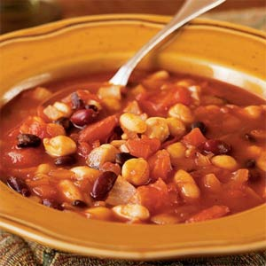

Vegetarian Chili

Ingredients
1 tablespoon olive oil
2 cups chopped onion
3 garlic cloves, minced
4 cups water, divided
2 tablespoons sugar
2 tablespoons chili powder
2 tablespoons Worcestershire sauce
2 (14.5-ounce) cans diced tomatoes, undrained
1 (15 1/2-ounce) can chickpeas (garbanzo beans), rinsed and drained
1 (15-ounce) can black beans, rinsed and drained
1 (15-ounce) can kidney beans, rinsed and drained
1 (16-ounce) can cannellini beans or other white beans, rinsed and drained
1 (6-ounce) can tomato paste
1/2 cup (2 ounces) reduced-fat shredded cheddar cheese, optional
Directions
Heat oil in a large Dutch oven over medium-high heat.
Add onion and garlic; sauté 3 minutes or until tender.
Add 3 cups water and next 8 ingredients (through cannellini beans), stirring to combine.
Combine remaining cup of water and tomato paste in a bowl, stirring with a whisk until blended.
Stir tomato paste mixture into bean mixture. Bring to a boil; reduce heat, and simmer 5 minutes
or until thoroughly heated.
Ladle soup into bowls. Top with cheese, if desired.
{kind=link}